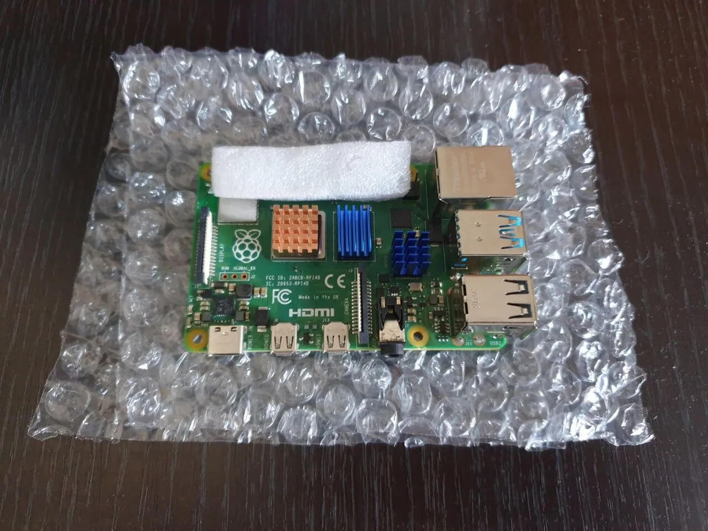
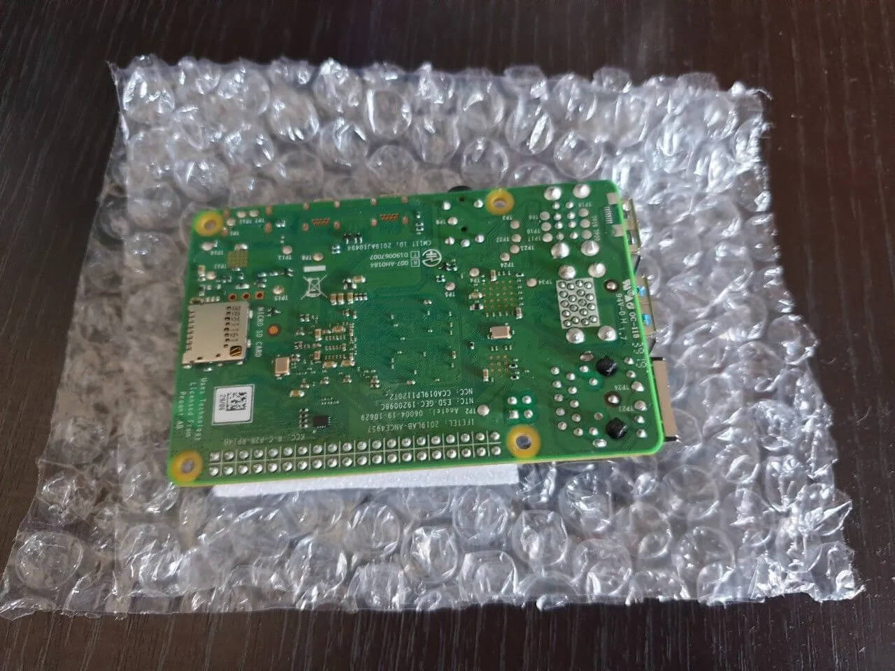
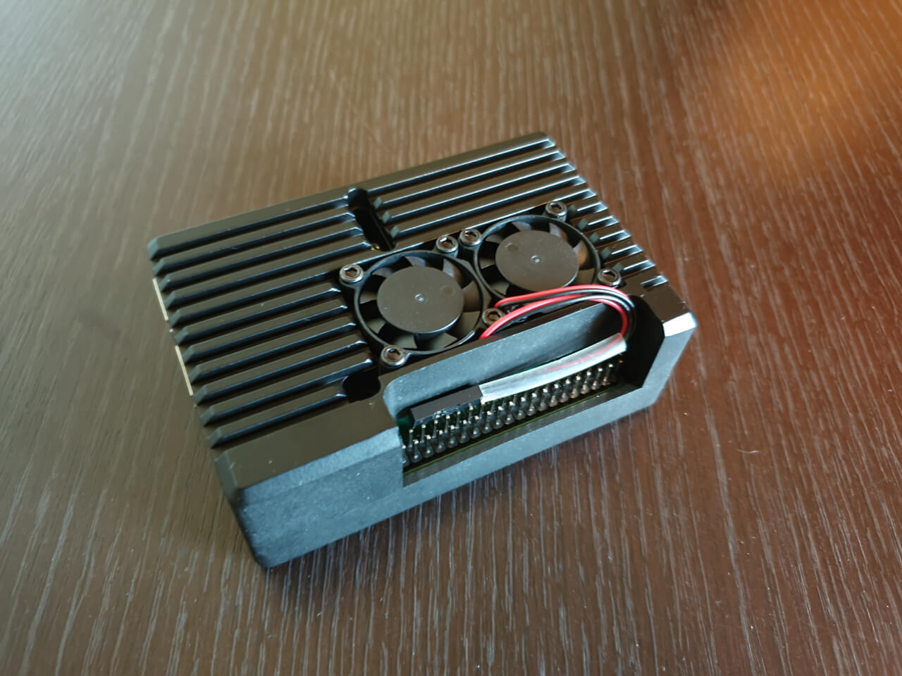
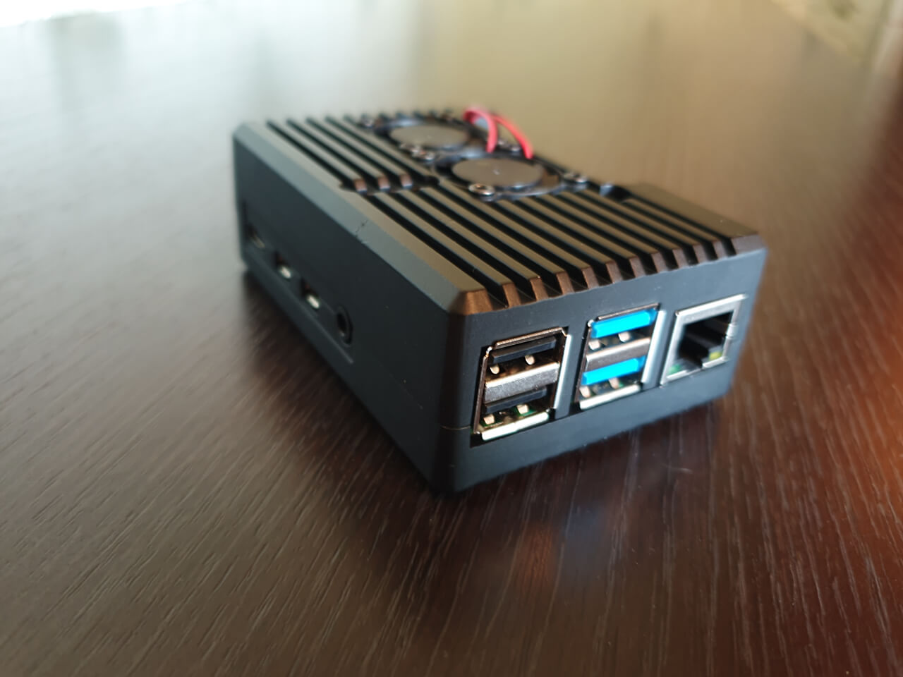
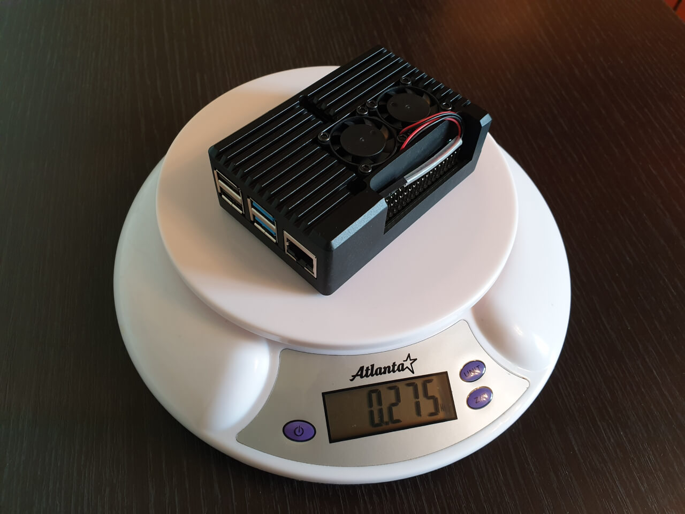

The Raspberry Pi single-board computer is quite often used as a device for hosting HyperHDR - one of its main advantages is its overall dimensions comparable to a regular bank card. Unfortunately, the situation with the availability of the Raspberry Pi has not improved yet, they are either not available in stores, or they are only sold in the compositions of KIT's (sets of several devices that we do not need) the price of which is unreasonably high. You can also use its counterparts like Orange Pi / Banana Pi and the like, the main thing is how stable OS images exist for them. Another alternative is various still cheap ARM-based TV boxes (the HyperHDR developer recommends devices that are built on the Amlogic S905x3 processor) on which it is possible to install third-party firmware based on Armbian or Debian assemblies. Particularly good are AARCH64 builds with which HyperHDR has very good compatibility.
I was able to buy a Raspberry Pi 4B with 2Gb of RAM on board at a good price in due time (before the shortage began). One important aspect when using HyperHDR is the presence of a USB3.0 port to reduce the delay in transferring data from the capture card to the Raspberry. Respectively, the card itself must have a connector of the appropriate standard, otherwise there will be no point in having it on the Raspberry. This is what she looked like after I buy it:
 
Since the single-board was used by me earlier (for other tasks), I purchased a separate aluminum case for it with an active cooling (link). This is what the board itself looks like in this case:
  
In this case, it significantly adds to its weight and dimensions, but still remains tiny compared to the most compact netbook. In turn, it serves not only as a cooling radiator, but also to protect the board itself.